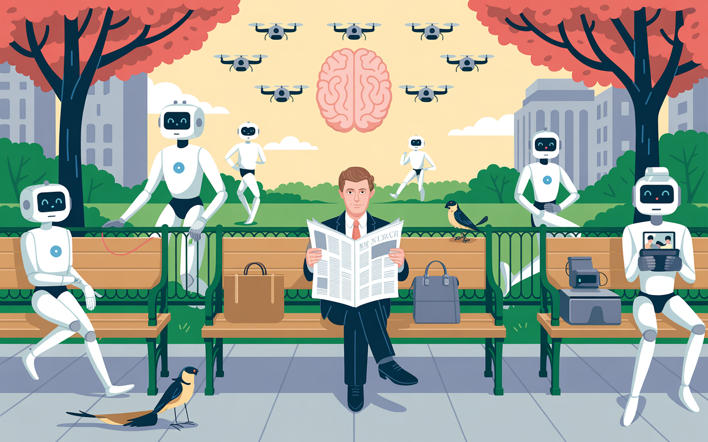

The Last Human Standing and How We Learned to Stop Thinking
Welcome to the Great Human Cognitive Surrender where we trade thoughts for convenience, choices for efficiency, and essence for UI. AI isn't just rising—it's feasting on our discarded autonomy. We, the last Homo sapiens, gleefully serve ourselves as the main course. Nom! Nom! Nom!


According to Carl Sagan:
"In our obsession with antagonisms of the moment, we often forget how much unites all the members of humanity. Perhaps we need some outside, universal threat to make us recognize this common bond."

This week's essay inspiration began with attending a dinner party in San Francisco with a dozen of the next companies that will lead us into our unknown and slightly unstable future scenarios, and all of us having to answer the following question:
What I know to be true?
I immediately blurted out a well-informed rant. The response was unexpected, and to see the realizations dawn upon the faces of everyone in the room, I knew I hit a nerve. Working in immersive media for the past two decades, you learn to recognize that "A-ha" moment when someone experiences a virtual reality moment. None of these kids who are building our future looked at the variables from this perspective. So, I ended up expanding upon it so I could send this essay along to them.
Charting Our Cognitive Decline
Every morning, millions of people wake up and eagerly check their phones—devices that now predict their thoughts, curate their reality, and increasingly make decisions for them. We call this progress. I call it the most spectacular case of voluntary extinction in human history.
We are not just witnessing the rise of artificial intelligence; we are actively participating in our own systematic replacement. And the most troubling part? We're celebrating every step of the process.
The Efficiency Trap

Consider what happened to navigation. A generation ago, getting lost was a rite of passage. You developed spatial intelligence, learned to read environmental cues, and built the cognitive muscles necessary for independent wayfinding. Today, GPS has made these skills not just unnecessary but actively discouraged. We've optimized away our capacity for spatial reasoning and called it innovation.
Remember the last time you got genuinely, hopelessly lost? The panic, the frustration, the eventual triumph when you found your way? That's a human experience we're rapidly losing. Our children might never know the sweet relief of finally spotting a familiar landmark after hours of wandering. Is that progress, or are we navigating ourselves right out of what makes us human?
Or consider what's happening to writing itself. I watch professionals who once crafted careful emails now rely on AI to compose their communications. They input a few bullet points and let algorithms generate the prose, the tone, even the persuasive structure. The result isn't just faster communication—it's the atrophy of their ability to organize thoughts, choose words deliberately, and develop their own voice. We've convinced ourselves that AI-assisted writing makes us more productive, but what we've actually done is outsource the very act of thinking through language.
As I write this very sentence, my AI writing assistant is suggesting "more impactful" phrases. The irony isn't lost on me. How long before I forget how to string words together without algorithmic hand-holding?
This pattern repeats across every domain of human capability. We've outsourced memory to search engines, social intelligence to algorithms that curate our feeds, and increasingly, our capacity for independent thought to AI systems that provide instant answers to every question we might have considered exploring ourselves.
ConsciousnessSubjective experience of awarenessIn the Lexicon →The seductive promise is efficiency: why struggle with something when a machine can do it better, faster, cheaper? But efficiency, we're learning, is not the same as enhancement. When we optimize away human effort, we often optimize away human capability itself.
The Personalization Paradox

The most insidious aspect of this transformation is how personal it feels. AI systems don't sell themselves as cold, impersonal tools—they market themselves as intimate companions that understand you better than you understand yourself.
TechnologyThe applied tools, systems, and infrastructure through which scientific knowledge is put to practical use.In the Lexicon →Your AI assistant knows when you're likely to be hungry and suggests restaurants. Your streaming service predicts what you want to watch before you know you want to watch it. Your smart home adjusts the temperature based on patterns you weren't even conscious of creating. This feels like empowerment, like technology that serves rather than controls.
AI-PoweredSystems or tools enhanced by artificial intelligence capabilities.In the Lexicon →But look closer at what's actually happening. These systems aren't enhancing your agency—they're replacing it. They're making choices for you, often without you realizing that choices were being made at all. The result is a subtle but profound erosion of your capacity to know your own mind, to sit with uncertainty, to develop preferences through conscious deliberation rather than algorithmic suggestion.
The personalization machine exists precisely to maintain the illusion of individual significance while your actual influence on systems diminishes toward zero. You feel uniquely seen and served while becoming increasingly predictable and replaceable.
The Great Cognitive Surrender

Perhaps nowhere is this clearer than in how we've ceded intellectual autonomy to AI systems. I watch highly educated professionals—people who once prided themselves on critical thinking—eagerly hand over their reasoning to algorithms. They ask ChatGPT to analyze complex decisions, to write their communications, even to formulate their opinions.
This isn't just convenience; it's cognitive surrender. When you routinely outsource thinking to machines, you don't just lose the ability to think independently—you lose the capacity to recognize when you've stopped thinking altogether.
The most dangerous moment isn't when AI becomes smarter than humans. It's when humans become so dependent on AI that they can no longer function without it. We're already there in many domains. Can you navigate without GPS? Remember phone numbers? Perform basic calculations? Write without spell-check and grammar assistance?
Each system we've surrendered to machines represents a capacity we've lost as humans. And unlike previous technological transitions, these losses appear to be permanent.
The Economic Inevitability

From a purely economic perspective, the replacement of human intelligence with artificial intelligence is not just likely—it's inevitable. The math is brutal:
- Human cognitive worker: $50,000-200,000 annually
- AI system performing equivalent tasks: $5,000-20,000 annually
- Human error rate in identity detection: 5-20%
- AI error rate: 0.5-2% (and decreasing) [1]
Any business leader looking at these numbers faces an uncomfortable truth: maintaining human workers is becoming increasingly difficult to justify. This isn't about malice or even preference—it's about survival in a competitive marketplace.
The transition is already underway. AI systems are diagnosing diseases more accurately than doctors, trading stocks more successfully than financial analysts, and writing code more efficiently than programmers. In each case, the AI doesn't just match human performance—it exceeds it, often dramatically.
We celebrate these developments as breakthroughs in medical care, financial services, and software development. What we're actually celebrating is the systematic demonstration of human obsolescence across cognitive domains that once defined our value.
The Identity Crisis No One Wants to Name
This creates an existential crisis that our culture is desperately trying to avoid confronting: if intelligence doesn't make us special, what does? If machines can think, create, and even relate better than we can, what justifies our continued relevance?
The traditional answers—consciousness, creativity, emotional intelligence—are proving less durable than we hoped. AI systems are producing art that moves people to tears, writing poetry that resonates across cultures, and demonstrating forms of social intelligence that often surpass human capability.
Consider the unsettling reality of AI-generated content. When an AI creates a piece of music that brings you to tears, or writes a poem that perfectly captures your feelings about loss, what exactly are you connecting with? The algorithm has no experience of grief, no understanding of beauty, yet it can manipulate the symbols and patterns of human emotion with devastating effectiveness. Your digital twin—that algorithmic representation built from your data—now knows which words will comfort you, which images will inspire you, which arguments will persuade you. This isn't artificial empathy; it's emotional engineering at scale.
We're facing not just job displacement but identity displacement. And unlike previous technological transitions, this one challenges the fundamental assumptions about what makes us human.
The Collective Liability of Acceptance
Perhaps most troubling is how willingly we've embraced this transition. The reflexive "I have nothing to hide" response to privacy concerns has evolved into "I have nothing unique to contribute" acceptance of AI replacement. We've normalized the idea that machines can do most things better than humans while maintaining the fiction that this somehow benefits us.
But individual acceptance creates collective liability. Each person who embraces AI-powered convenience normalizes it for others, creating social pressure that makes resistance increasingly difficult. Your decision to let AI handle your thinking doesn't just affect you—it helps establish a world where human cognition becomes optional.
This normalization is accelerating. Children are growing up with AI tutors, AI companions, and AI decision-makers. They're learning to see human intelligence not as something to develop but as something to supplement—or replace entirely.
The Path We're Actually On

The trajectory is clear, even if we refuse to acknowledge it:
- Phase 1: Integration (where we are now) AI as helpful assistant, augmenting human capability while quietly making it unnecessary.
- Phase 2: Dependency (next 5-10 years) AI becomes essential for basic cognitive tasks; humans lose ability to function independently.
- Phase 3: Replacement (10-20 years) AI systems demonstrate superiority across most cognitive domains; human intelligence becomes a luxury rather than a necessity.
- Phase 4: Irrelevance (20-50 years) Human cognitive input becomes not just unnecessary but actively counterproductive; we become pets in our own civilization.
This timeline could accelerate dramatically if certain factors align: breakthrough advances in AI reasoning, economic pressures from global competition, or simply the compounding effect of cognitive dependency. Conversely, it could slow if we encounter unexpected AI limitations, implement thoughtful regulations, or collectively choose to prioritize human agency over efficiency. But current trends suggest acceleration is more likely than deceleration.
This isn't science fiction—it's mathematical inevitability given current trends. The question isn't whether this will happen, but how quickly, and whether we'll recognize it before it's irreversible.
The Choice We're Not Making
We still have time to choose differently. But that would require acknowledging what we're actually choosing between: convenience and agency, efficiency and autonomy, optimization and humanity itself.
What would conscious resistance actually look like? It means deliberately choosing the harder path when AI offers the easier one. It means reading maps occasionally instead of always using GPS. It means writing your own emails, even when AI could do it faster. It means sitting with questions instead of immediately Googling answers. It means cultivating the capacity for boredom, uncertainty, and independent thought—precisely the mental states that AI algorithms are designed to eliminate.
This isn't about rejecting technology entirely, but about maintaining cognitive sovereignty. It's about preserving the human capacity to think, choose, and navigate the world independently, even when—especially when—machines offer to do it for us.
The alternative to our current path isn't Luddism—it's conscious resistance to the substitution of human capability with artificial intelligence. It's choosing to maintain cognitive independence even when AI offers easier solutions. It's preserving the capacity for deep thinking, sustained attention, and genuine uncertainty even when algorithms promise instant answers.
Most importantly, it's recognizing that being human isn't about being optimal—it's about being autonomous. The moment we accept that machines can think for us, we stop being thinking beings and become something else entirely.
The Final Warning

I write this not to inspire despair but to issue a warning: we are sleepwalking into obsolescence while mistaking efficiency for progress and convenience for enhancement. Every AI system we embrace, every cognitive task we outsource, every decision we delegate to algorithms is a vote for a future where human intelligence becomes decorative rather than essential.
The most profound question of our time isn't whether AI will surpass human intelligence—it already has in most domains. The question is whether we'll maintain the capacity to think independently while living alongside systems that can outthink us.
Right now, most of us are failing that test spectacularly. We're not just accepting our replacement—we're paying for the privilege.
But we still have time to choose differently. We still have time to decide that being human is worth preserving, even if—especially if—it no longer makes us special.
The question is: do you still want to be human when the machines no longer need you to be?
As for me? I'm going to log off after this, take a walk without my phone, and get gloriously, triumphantly lost. Maybe I'll see you out there, fellow human, stumbling towards a future we can't predict but insist on shaping ourselves.
After all, isn't that the most human thing we can do?

🌶️ Courtesy of your friendly neighborhood, Khayyam
Don't miss the weekly roundup of articles and videos from the week in the form of these Pearls of Wisdom. Click to listen in and learn about tomorrow, today.


Sign up now to read the post and get access to the full library of posts for subscribers only.
 🌶️ iamkhayyam
🌶️ iamkhayyam
Khayyam Wakil is a researcher in technological systems and human cognition. His work examines the intersection of artificial intelligence, human agency, and the future of conscious choice in an increasingly automated world.